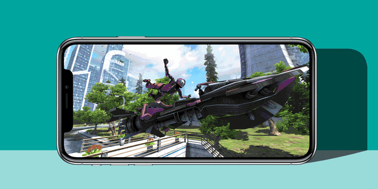

📱 Games mobile dominam o mercado
Os jogos mobile conquistaram uma fatia gigantesca do mercado global, graças à acessibilidade dos smartphones e ao aumento constante da base de jogadores casuais e hardcore. Hoje, é praticamente impossível encontrar alguém que nunca tenha jogado um game no celular, seja para passar o tempo ou para competir online com amigos e desconhecidos. Essa universalidade fez dos dispositivos móveis o ambiente ideal para desenvolvedores explorarem diferentes gêneros e estilos — de quebra-cabeças simples a shooters em tempo real com gráficos incríveis.
Outro fator que impulsiona o setor é a facilidade de publicação e o modelo de distribuição gratuita. Muitos dos games mais populares podem ser baixados sem custo inicial, o que atrai milhões de jogadores rapidamente. As microtransações oferecem itens cosméticos, moedas virtuais e vantagens temporárias, criando uma economia interna lucrativa. Além disso, os passes de batalha e anúncios integrados aumentam a receita sem impedir o acesso ao conteúdo, permitindo que o jogo permaneça gratuito.
Com a evolução dos processadores móveis e a chegada do 5G, a experiência de jogo no celular ficou ainda mais fluida e imersiva. Jogos como Call of Duty: Mobile, PUBG Mobile, Genshin Impact e Free Fire mostram que títulos complexos podem sim funcionar com qualidade em pequenas telas, inclusive com suporte a controles físicos e multiplayer competitivo. Os gráficos, animações, trilhas sonoras e até o enredo rivalizam com jogos de console.
As empresas também investem pesado em marketing e em atualizações frequentes, mantendo o interesse dos jogadores por anos. Essa fórmula de conteúdo constante, personalização e acessibilidade criou uma geração inteira que prefere o mobile como sua principal plataforma de jogos. Hoje, mais da metade da receita global da indústria de games vem exclusivamente dos jogos mobile, superando PC e consoles juntos em muitos mercados.
Esse domínio não parece que vai diminuir tão cedo. Muito pelo contrário — o mobile está cada vez mais consolidado como o centro da experiência gamer moderna, seja com jogos simples para relaxar ou com eSports de alto nível disputados em celulares. A nova era dos jogos chegou na palma da sua mão.